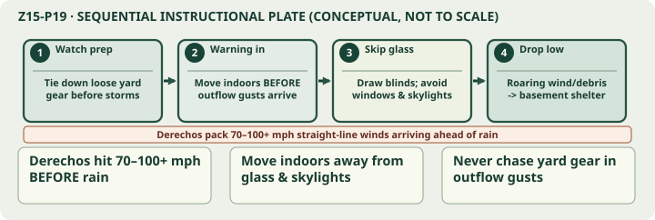

Z15-P19 · Disaster scenarios · New manuscript
Prepare for straight-line derechos and damaging hail before outflow gusts hit
Treat Severe Thunderstorm Warnings with high-wind/derecho potential seriously to prevent crushing tree falls, glass injuries, and blackouts.
When it applies · Fast-moving squall lines, bow-echo derechos (70–100+ mph straight-line winds), and severe hailstorms across the Midwest.
Equipment · Sturdy indoor interior room away from windows, NOAA/WEA alerts, and pre-storm secured yard furniture.

Actions
- Recognize that Upper Midwest derechos produce sustained straight-line wind gusts rivaling weak-to-moderate tornadoes across hundreds of miles—moving rapidly at 50–70 mph with violent outflow gusts arriving BEFORE rain begins.[D04, E18]
- Move inside a sturdy building away from windows and skylights immediately upon a Severe Thunderstorm Warning (especially tags noting "Destructive" or 70+ mph winds / large hail)—shut blinds/curtains beforehand to help catch shattering glass and avoid rooms beneath towering dead/leaning yard trees if an interior room exists.[D04, E13]
- Secure lightweight patio furniture, grills, and loose tools BEFORE storms arrive on Watch days—NEVER run outside during rising outflow gusts to chase trash cans or patio umbrellas.[D04, E18]
Failure recognition · Staying in a glass-walled sunroom or backyard tent during a 85 mph derecho outflow gust that drives hail through panes and drops mature limbs.[D04, E18]
Verify · Confirm household moves inside away from windows/skylights on Severe Thunderstorm Warnings and outdoor gear is secured ahead of storms.[D04]
Stop or change course · Flying debris, shattering glass, or roaring wind shifts require dropping immediately to the lowest interior tornado-safe room.[D03, D04]
Evidence and editorial notes
- D03 · National Weather Service · Tornado Safety: During a Tornado (Current web edition)
- Section: During a Tornado: at home, outside or in a vehicle · Conditions: Tornado warning; options depend on location and flood danger
Support: Use a sturdy building’s lowest suitable interior area when possible. Mobile homes and overpasses are unsafe. Follow the vehicle or outdoor last-resort branch if sturdy shelter cannot be reached.
Limitations: A low outside spot is conditional on safe access and absence of flood danger. Follow local alerts. · Conflicting evidence: See A02 claim audit for boundaries.
Editorial note: Core tornado shelter-selection and post-storm hazard evidence in Z15. · Specialist reviewer: Meteorology and emergency management
Primary source · checked 2026-11-25 - D04 · FEMA / Ready.gov · Thunderstorms and Lightning (current web edition)
- Section: Severe Thunderstorms, Straight-Line Winds, Hail, and Lightning · Conditions: Severe Thunderstorm Warnings, derechos, and electrical storms
Support: Move indoors to a substantial building immediately when thunder is heard or severe wind warnings issue; stay away from windows, corded appliances, and plumbing during lightning, and avoid downed limbs and energized downed lines after derechos.
Limitations: Straight-line derecho winds can rival tornado damage across hundreds of miles and cause multi-day regional power blackouts. · Conflicting evidence: None; integrates with E07 and E18.
Editorial note: Grounds severe-storm, hail, and straight-line wind response cards. · Specialist reviewer: Meteorology and utility safety
Primary source · checked 2026-11-24
Current assessment · A04-D04 (2026-11-25) · Bounded support confirmed from an alternate source (A04): The two relevant pages support separate thunder/lightning and high-wind conditions and energized line avoidance. The original tornado link did not verify this claim. Limits: Specialist review PENDING (Meteorology and utility safety); publication HOLD. All release decisions pending. - E13 · USDA Forest Service · Hazard Tree Safety (agency PDF)
- Section: What You Can Do to Reduce Risk · Conditions: Forest campsites and stops
Support: Look for dead trees and falling material. Stay away from hazardous trees and move away when winds make the site unsafe.
Limitations: Internal decay and root rot can cause live-looking trees to fail in saturated soils or high wind. · Conflicting evidence: Does not specify a universal exclusion radius; tree height and slope govern fall reach.
Editorial note: Prevents false precision on fall-zone distance while requiring overhead screening. · Specialist reviewer: Land management and arboriculture safety
Primary source · checked 2026-11-24 - E18 · NWS · Thunderstorm Safety (current web edition)
- Section: Thunderstorm Safety > Hail, Downbursts, and Flooding · Conditions: Approaching severe thunderstorm with hail, outflow gusts, or heavy rain
Support: Outflow gusts, hail, lightning, and flash runoff can strike before rain arrives at camp; break exposed ridge travel early and secure or vacate lightweight shelters.
Limitations: Storm cells can intensify faster than backcountry foot travel can clear exposed terrain. · Conflicting evidence: None; integrates with E04 and E07.
Editorial note: Connects storm-structure warning cues to early shelter selection. · Specialist reviewer: Weather safety and emergency management
Primary source · checked 2026-11-24
Source lineage · FEMA Ready.gov Thunderstorms and NWS; new manuscript · Classification · New manuscript.